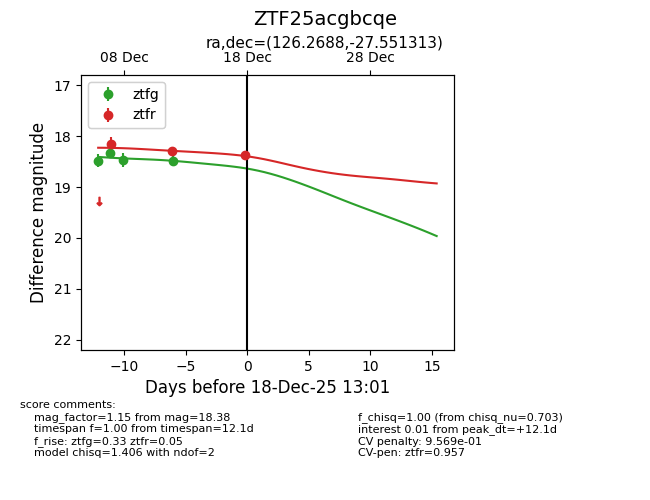
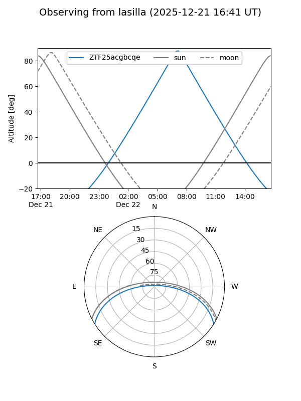
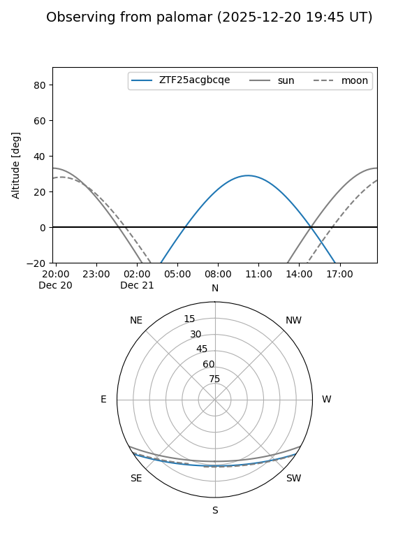
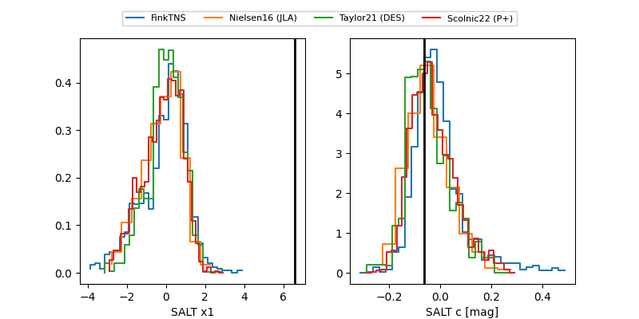

ZTF25acgbcqe
Target ZTF25acgbcqe at 2025-12-20 10:55
Aliases and brokers:
FINK: fink-portal.org/ZTF25acgbcqe
Lasair: lasair-ztf.lsst.ac.uk/objects/ZTF25acgbcqe
ALeRCE: alerce.online/object/ZTF25acgbcqe
alt names
ZTF25acgbcqe (ztf,fink_ztf)
Coordinates:
equatorial (ra, dec) = 126.2689,-27.55131
equatorial (HMS+DMS) = 08:25:04.53,-27:33:04.70
galactic (l, b) = (248.0533,+5.88779)
Flags:
Photometry:
last ztfg=18.49, ztfr=18.36
4 ztfg, 4 ztfr detections
Lightcurve

Visibility


Additional plots
